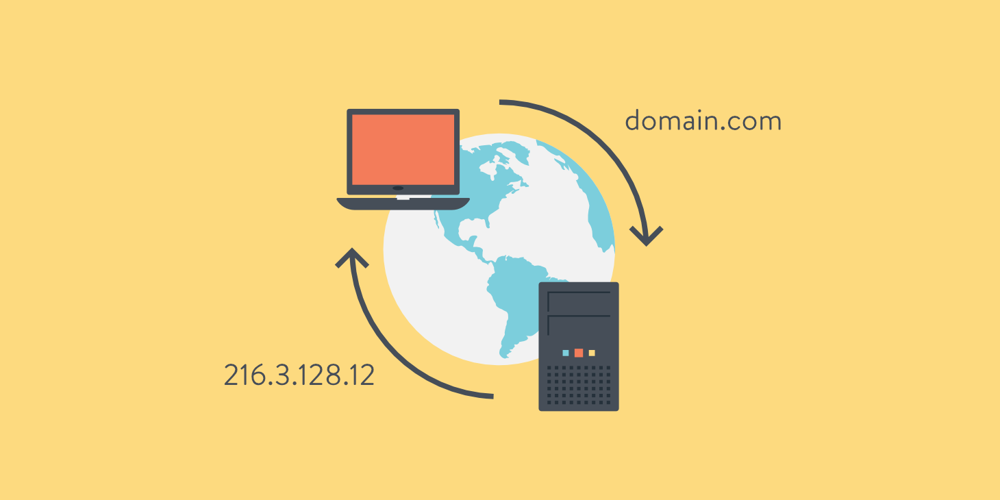

Serviços de rede
|Modelo OSI|
Modelo TCP-IP|
Protocolo UDP|
DNS|
DHCP|
FTP|
HTTP/HTTPS|
Webserver|
Modelo Osi
O OSI é o primeiro modelo padrão de comunicação entre sistemas de computadores e redes, ele faz uso de sete camadas para garantir essa conversa. A maioria das empresas da área de computadores e telecomunicações o adotou no início dos anos 80. A partir daí, a Organização Internacional de Normalização (ISO) o transformou na principal referência em 1984. Todo o conceito do modelo de Interconexão de Sistemas Abertos é representado por sete camadas que, juntas, realizam a comunicação através de uma rede.
Sua importância é enorme, pois ajuda usuários e profissionais a determinar o hardware e software necessários para construir suas redes, por exemplo. Além disso, facilita na hora de encontrar problemas em potencial, já que isso pode ser visualizado de forma individual em cada camada.
Por último, poder definir quais aplicações e dispositivos a parte da rede vai trabalhar é algo que poupa tempo e recursos para uma empresa. |
|
Modelo TCP-IP
O TCP/IP é fundamental para a rede de internet. Esses dois protocolos garantem que pacotes de informações cheguem a seu destino de forma correta e segura. Dessa forma, conseguimos tratar e definir os dados entre os dispositivos antes de alcançarem seus destinos.Quando falamos de TCP, nos referimos a algo que faz toda a definição de como aplicações conseguem criar canais de comunicação através da rede. Também auxilia na quebra em pedaços de uma mensagem que será posteriormente reconstruída antes de chegar a seu destino. Já o IP é o que define o endereço e o caminho do pacote de dados, ou seja, ele garante que as informações cheguem a seu destino correto. Ele é basicamente o “carteiro”, que recebe o item e o checa para ter certeza de que estará no local de seu objetivo. Sendo assim, é correto afirmar que TCP/IP é um conjunto de protocolos e um modelo de comunicação de rede. Ele serve para, principalmente, viabilizar a troca de informações entre ORIGEM e DESTINO.
Funcionamento do TCP-IP:
Camada Aplicação: como o nome diz, usamos esta camada para definir o uso ou finalidade da transmissão dos protocolos relacionados ao programa. Existem diversos tipos para distintas aplicações, como por exemplo, para troca de e-mails (SMTP), Internet (HTTP), arquivos (FTP);
Camada Transporte: é responsável pela maneira que os dados serão transmitidos pela rede, conforme o uso, prioridade ou criticidade do conteúdo trafegado. Esta camada define a melhor maneira de os dados serem transmitidos. Estão inclusos aqui os protocolos TCP e UDP;
Camada de Internet: ela é responsável pelo roteamento de origem e destino dos pacotes. Por meio dela, os dispositivos de diversas redes privadas e públicas encontram-se para troca de pacotes e informações solicitadas por diversas aplicações;
Camada de Enlace: cuida do conjunto de protocolos que fazem o enquadramento dos dados anteriormente definidos e a transmissão em camada física de todo o conjunto. Usa métodos e padrões que possam concluir a transmissão de maneira segura e confiável, de fim a fim. Tecnologias como Wi-Fi e Ethernet trabalham ativamente nesta camada.
Protocolo UDP
O Protocolo UDP é um protocolo de comunicação utilizado em toda a internet para transmissões com validade especialmente limitada, tais como reproduções de vídeo ou pesquisas no DNS. Ele acelera as comunicações ao não estabelecer formalmente uma conexão antes que os dados sejam transferidos. Isso permite que os dados sejam transferidos muito rapidamente, mas também pode fazer com que pacotes se percam em trânsito além de criar oportunidades de exploração na forma de ataques DDoS.
Como funciona:
Como todos os protocolos de rede, o UDP é um método padronizado de transferência de dados entre dois computadores de uma rede. Em comparação com outros protocolos, o UDP realiza este processo de forma simples: envia pacotes (unidades de transmissão de dados) diretamente para um computador de destino, sem estabelecer uma conexão antes, indicando a ordem desses pacotes ou verificando se eles chegaram como previsto. (Os pacotes UDP são denominados "datagramas").
O UDP é mais rápido, mas menos confiável que o TCP, outro protocolo de transporte comum. Em uma comunicação TCP, os dois computadores começam estabelecendo uma conexão por meio de um processo automatizado chamado "handshake". Somente depois que esse handshake for concluído, um computador realmente transferirá pacotes de dados para o outro.
As comunicações UDP não passam por esse processo. Em vez disso, um computador pode simplesmente começar a enviar dados para o outro, lém disso, as comunicações TCP indicam a ordem em que os pacotes de dados devem ser recebidos e confirmam se os pacotes chegaram como previsto. Se um pacote não chegar, devido, por exemplo, a um congestionamento nas redes intermediárias, o TCP exige que ele seja reenviado. As comunicações UDP não incluem nenhuma dessas funcionalidades.
Sistema de Nomes de Domínio (DNS)
O Sistema de Nomes de Domínio (DNS) é uma coleção de bancos de dados que traduz nomes de host para endereços únicos de IP, existem duas formas de acessar um site na internet: digitando o nome de domínio que você já está acostumado ou digitando o endereço IP da sua hospedagem, é lógico que digitar a sequência de números no navegador toda vez que você quiser visitar um site não faz sentido, então DNS faz o trabalho de tradução desse endereço em palavras, que formam a URL que você conhece, no endereço IP do servidor, cada nome de domínio tem um único número IP e você não verá mais de um site com a mesma URL. Porém, nomes de domínios diferentes podem encaminhar você de um site para outro. Basta que o responsável compre o direito de usar todos ao mesmo tempo. Essa tradução do nome de domínio para o IP acontece em uma fração de segundos. Não é algo que vá perceber no uso rotineiro do navegador de internet, mas ela existe. Agora imagine que todos esses “pedidos de tradução” de nomes de domínios em IP (ou consultas) chegam em massa o tempo todo. A solução para evitar gargalos é fazer com que eles não sejam processados na mesma hora. Sendo assim, usa-se o chamado Cache DNS, que armazena as últimas consultas aos servidores temporariamente para não ser necessário realizar uma nova tradução de nomes de domínio para IP conhecido.
|

|
Dynamic Host Configuration Protocol (DHCP)
DHCP é a sigla para Dynamic Host Configuration Protocol. Trata-se de um protocolo utilizado em redes de computadores que permite a estes obterem um endereço IP automaticamente.
Caso tenha que administrar uma rede pequena - por exemplo, com 5 computadores - você não terá muito trabalho para atribuir um número IP a cada máquina. E se sua rede possuir 300 computadores? Ou mil? Certamente, o trabalho vai ser imenso e, neste caso, é mais fácil cometer o erro de dar o mesmo número IP a duas máquinas diferentes, fazendo com que estas entrem em conflito e não consigam utilizar a rede.
O protocolo DHCP é uma eficiente solução para esse problema, já que, por meio dele, um servidor distribui endereços IP na medida em que as máquinas solicitam conexão à rede. Quando um computador desconecta, seu IP fica livre para uso de outra máquina. Para isso, o servidor geralmente é configurado para fazer uma checagem da rede em intervalos pré-definidos.
É importante frisar que, além do endereço IP, também é necessário atribuir outros parâmetros a cada computador (host) que passa a fazer parte da rede. Com o DHCP isso também é possível. Pode-se passar à máquina-cliente máscara de rede, endereços de servidores DNS (Domain Name Server), nome que o computador deverá assumir na rede (por exemplo, infowester, infowester1 e assim por diante), rotas, etc.
Um exemplo importante sobre o uso de DHCP é o caso dos provedores de internet. Na maioria dos casos, a máquina do usuário recebe um endereço IP diferente para cada conexão à internet. Isso é possível graças à combinação do DHCP com outros protocolos, o PPP (Point to Point Protocol), por exemplo.
|
|
Protocolo FTP
O protocolo FTP é usado para transferências de arquivos entre um servidor, sistema de armazenamento ou outro dispositivo através de uma conexão de rede. Ele utiliza dois canais básicos para operar, um de comando e um de dados, o canal de comando é o responsável por carregar as informações sobre a tarefa em si, ou seja, quais arquivos devem ser acessados e etc. Já o canal de dados é responsável por transferir os dados reais do arquivo entre os dispositivos, de uma forma simplificada, ao fazer um upload de arquivos, dados são transferidos de um computador para um servidor. Já ao fazer um download, os arquivos são transferidos de um servidor para o seu computador pessoal.
Funcionamento do FTP:
Quando um computador se conecta a uma rede, ele geralmente não sabe quem é o servidor DHCP e, então, envia uma solicitação à rede para que o servidor DHCP "veja" que uma máquina-cliente está querendo fazer parte da rede e, portanto, deverá receber os parâmetros necessários. O servidor DHCP responde informando os dados cabíveis, principalmente um número IP livre até então. Caso o cliente aceite, esse número ficará indisponível a outros computadores que se conectarem à rede, já que um endereço IP só pode ser utilizado por uma única máquina por vez.
O administrador da rede pode configurar o protocolo DCHP para funcionar nas seguintes formas: automática, dinâmica e manual:
Automática: neste modo, uma determinada quantidade de endereços IP é definida para ser usada na rede, por exemplo, de 192.168.0.1 a 192.168.0.50. Assim, quando um computador fizer uma solicitação de inclusão na rede, um dos endereços IPs em desuso é oferecido a ele;
Dinâmica: este modo é muito semelhante ao automático, exceto no fato de que a conexão à rede é feita por um tempo pré-determinado. Por exemplo, uma máquina só poderá ficar conectada por no máximo duas horas;
Manual: este modo funciona da seguinte forma: cada placa de rede possui um parâmetro exclusivo conhecido por MAC (Medium Access Control). Trata-se de uma seqüência numérica que funciona como um recurso para identificar placas de rede. Como esse valor é único, o administrador pode reservar um endereço IP para o computador que possui um determinado valor de MAC. Assim, só este computador utilizará o IP em questão. Esse recurso é interessante para quando é necessário que o computador tenha um endereço IP fixo, ou seja, que não muda a cada conexão.
HTTP/HTTPS
O HTTP é uma sigla para Hypertext Transfer Protocol, e ele é considerado um protocolo que serve para a comunicação.
Utilizado principalmente na rede e na internet para transferir os dados entre o computador de um usuário e o servidor de hipermedia.
Em outras palavras: o HTTP é responsável por cada um dos bytes de informações ou dados que trafegam e navegam entre o seu PC, celular, ou outros dispositivos, e os servidores de rede, ou seja, de internet.
O HTTPS é uma sigla para Hypertext Transfer Protocol Secure. Essa é uma versão de protocolo idêntica ao HTTP, com a diferença de ser sobre uma camada totalmente SSL. Essa camada SSL, adicional, permite que as informações sejam transmitidas através de uma conexão que é totalmente criptografada e que a autenticidade do servidor e do cliente sejam verificadas através de certificados que são digitais. A porta que normalmente é utilizada pelo HTTPS é a 443, e através desse protocolo é criada uma chave, que então é negociada com o servidor, e todos dados que navegam entre os dispositivos e o servidor é criptografado. Atualmente está sendo feito uma campanha para que cada vez mais sites comecem a utilizar o protocolo HTTPS. E você já começou a utilizar esse formato nas suas aplicações? Deixe nos comentários qual foi a sua impressão sobre o artigo.
|

|
Webserver
Um web server é um sistema computacional que hospeda e fornece acesso aos conteúdos e aplicações através da internet. Geralmente contratado como um serviço, esse servidor recebe e processa as solicitações feitas por navegadores através de protocolos de rede como o HTTP ou HTTPS.
Um servidor que presta esse tipo de serviço pode ser um computador físico ou instância de um datacenter, que armazena e disponibiliza o conteúdo para ser acessado por meio da internet.
Esse acesso geralmente é feito por computadores e dispositivos móveis através de solicitações feitas por browsers, ou seja, softwares navegadores como o Google Chrome e Microsoft Edge.
Essas solicitações incluem o endereço do conteúdo desejado, como por exemplo uma página HTML, um arquivo de áudio, vídeo ou imagem.
Os servidores web são responsáveis por hospedar sites, aplicativos, serviços de e-mail, armazenamento em nuvem e outros serviços online.
Como funciona:
Ao receber uma solicitação de um servidor DNS, o servidor web processa a requisição, buscando o conteúdo solicitado no sistema de arquivos ou em um banco de dados.
Em seguida, ele retorna a requisição com o conteúdo solicitado, que é enviado de volta para o navegador de que fez a solicitação.
Além de entregar conteúdo estático como arquivos HTML ou imagens, os servidores web também podem executar scripts e aplicativos, como servidores de aplicativos ou servidores de banco de dados.
Nesses casos, o servidor é responsável por executar o script ou aplicativo, processar a solicitação e enviar a resposta para o solicitante.